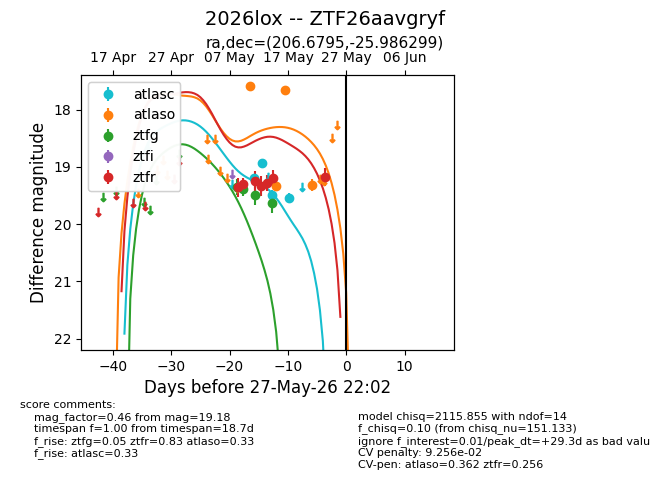
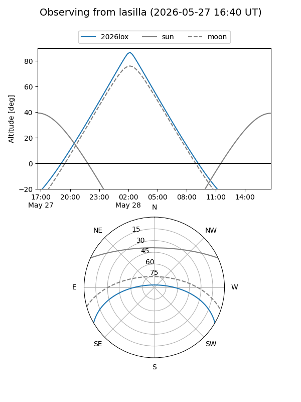
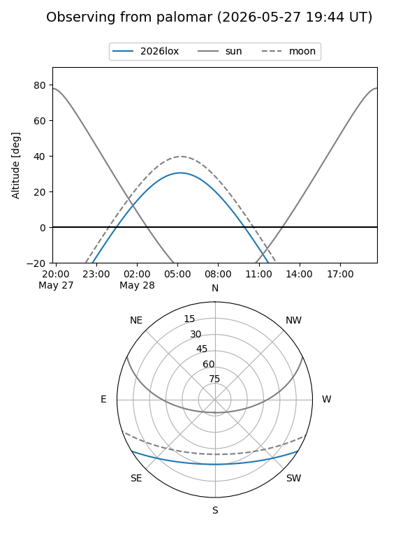
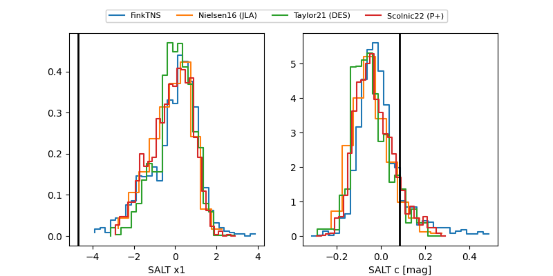

2026lox
Target 2026lox at 2026-05-27 22:03
Aliases and brokers:
lsst-FINK: link
lsst-Lasair: link
lsst-ALeRCE: link
ztf-FINK: link
ztf-Lasair: link
ztf-ALeRCE: link
TNS: link
YSE: link
alt names
ZTF26aavgryf (ztf,fink_ztf)
2026lox (tns,yse)
Coordinates:
equatorial (ra, dec) = 206.6795,-25.98630
equatorial (HMS+DMS) = 13:46:43.09,-25:59:10.68
galactic (l, b) = (318.1750,+35.24384)
Flags:
likely cv: !
Photometry:
last atlasc=19.54, atlaso=19.32, ztfg=19.63, ztfr=19.18
4 atlasc, 4 atlaso, 4 ztfg, 7 ztfr detections
Lightcurve

Visibility


Additional plots
